Nancy Halt, 2017-2020, was an art collective and collective work by Vera Karlsson, Julia Moritz, Bob van der Wal and baby Juno.
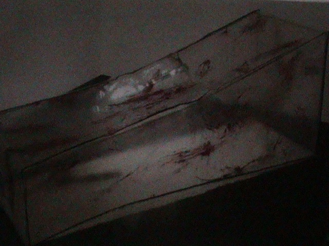
In Labour, 2017 in Aubades: Land Art for Aliens
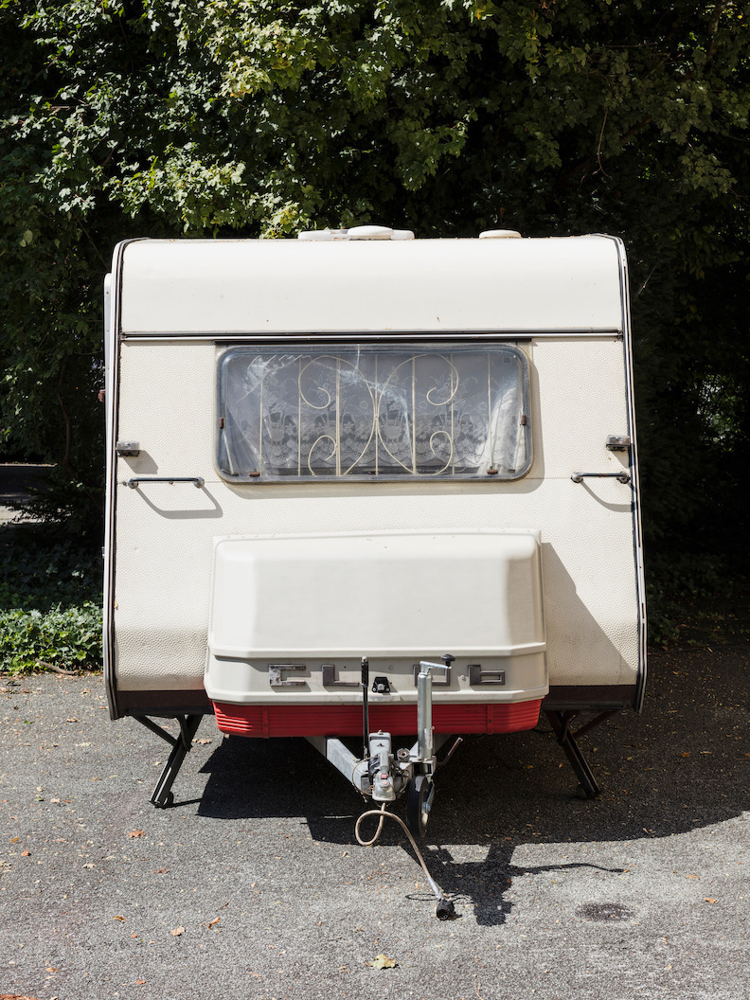
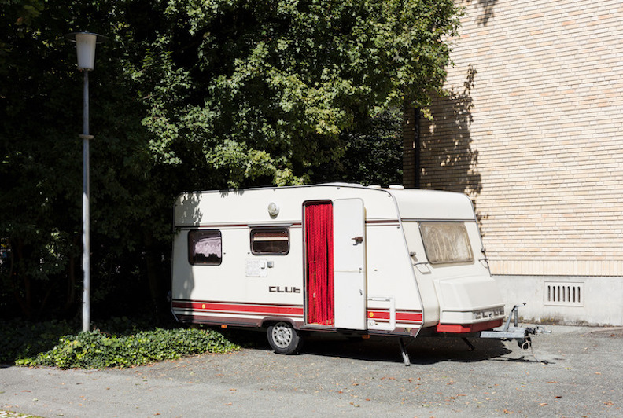
Nancy Halt in Sie sagen wo Rauch ist, ist auch Feuer At Kunsthalle Bern and Kunsthaus Glarus in 2017
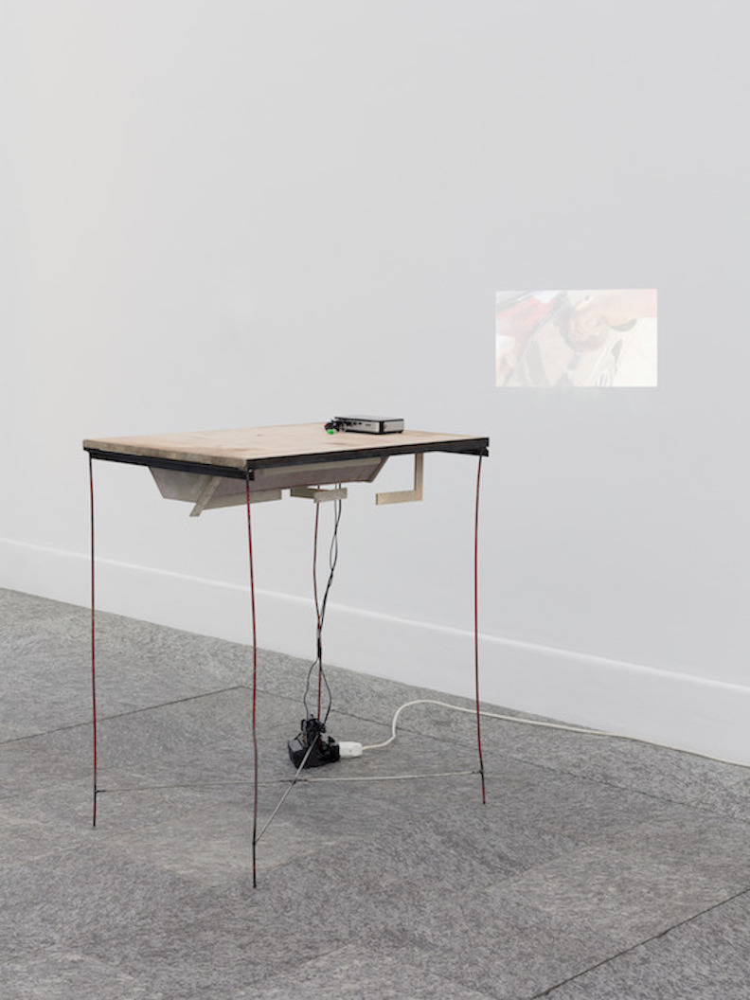
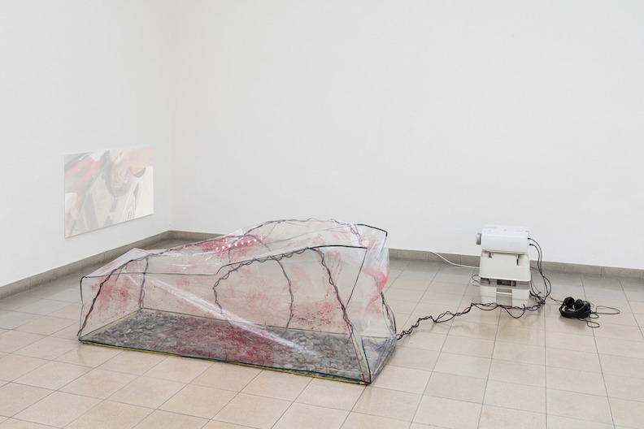
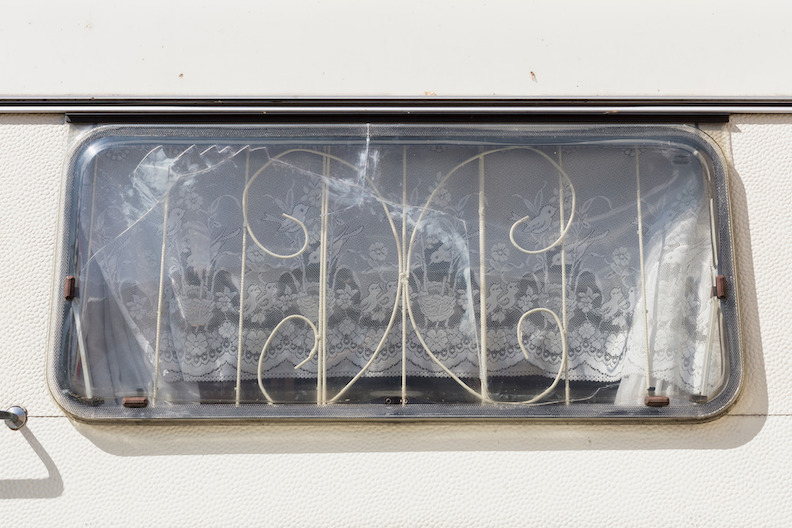
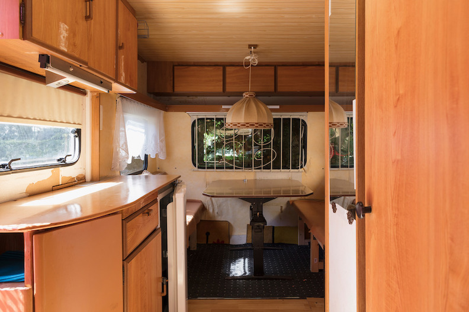
Nancy Halt in Sie sagen wo Rauch ist, ist auch Feuer At Kunsthalle Bern and Kunsthaus Glarus in 2017
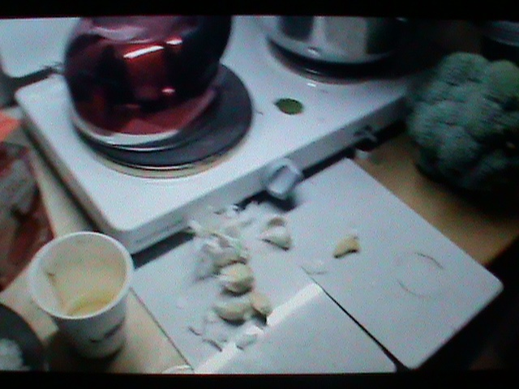
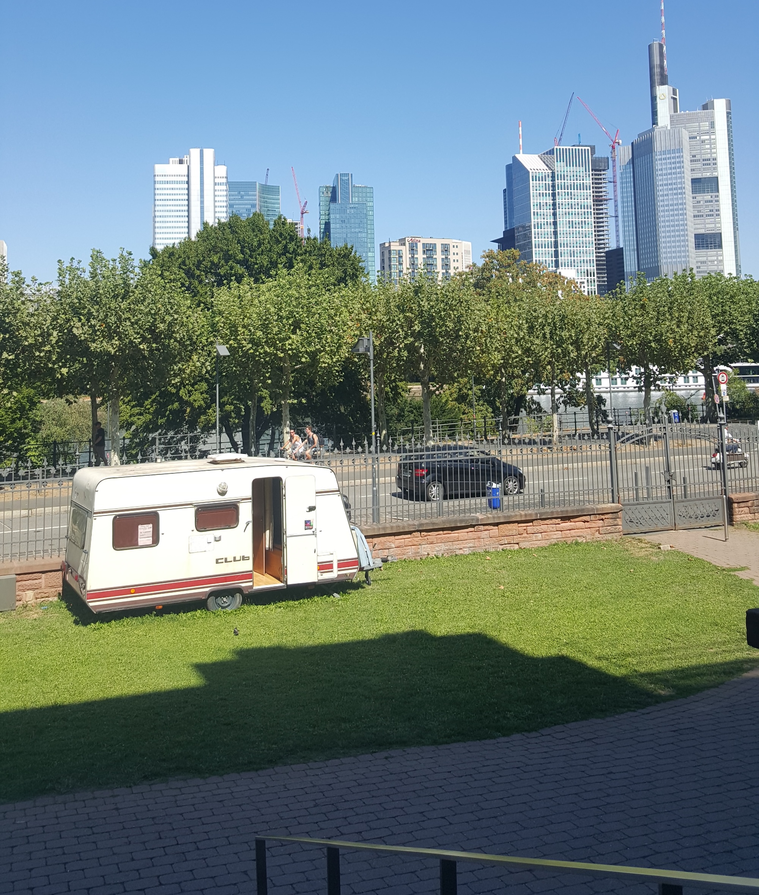
Nancy Halt, caravan parked infront of Städel Museeum, Frankfurt am Main, as part of degreeshow After Rubens, 2018. Inside caravan display of video work, Hydras Head.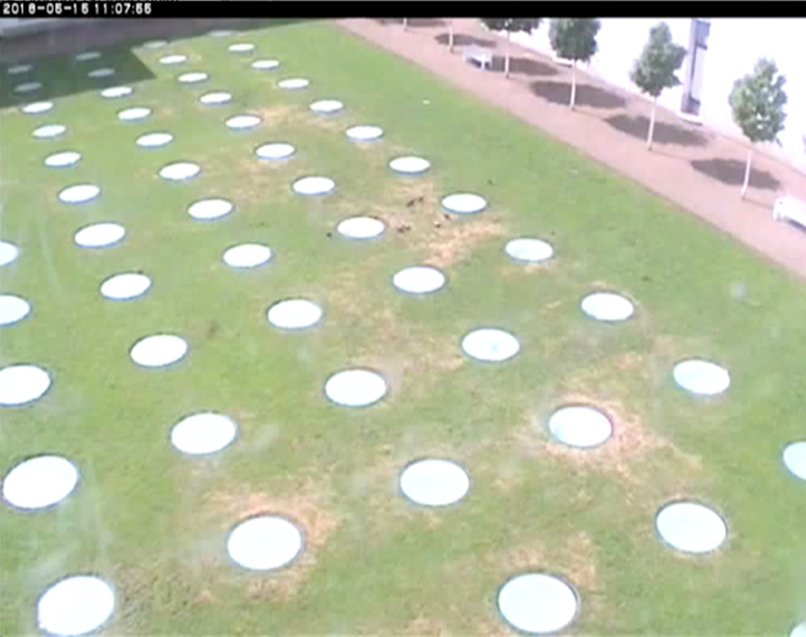
video still from Hydras Head, footage from Städle Museeum security camera Nancy Halt Trailer, 2017Nancy Halt, Monday, 2018
Nancy Halt at Cell Project Space 2018
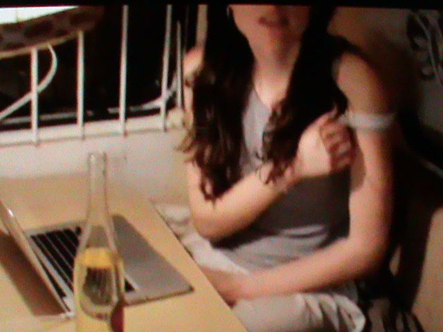
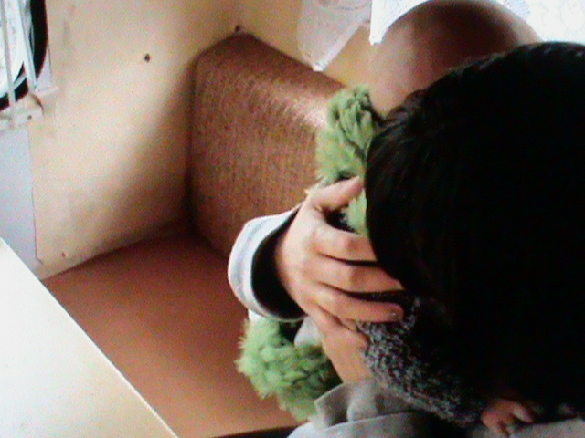
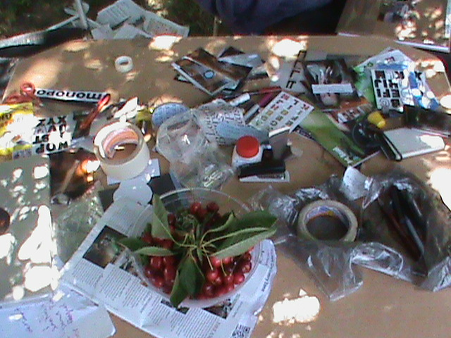
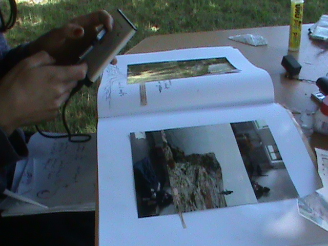
Working with a caravan as studio, installation and body, field recordings, video, fotoalbums and more to create the art of 'Nancy Halt'. Whos life builds upon another artists, the exceptional Land Work artist, Nancy Holt.
The work drew upon mythology and art-historical references to create a fictional character and artist. The project appropriates Land Art as it's study and their life’s work—from abtuction and birth and through tropes such as family, adolescence, the concept of leisure, alien life and work.